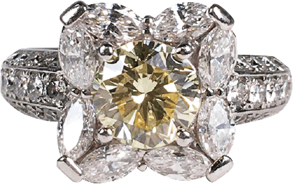
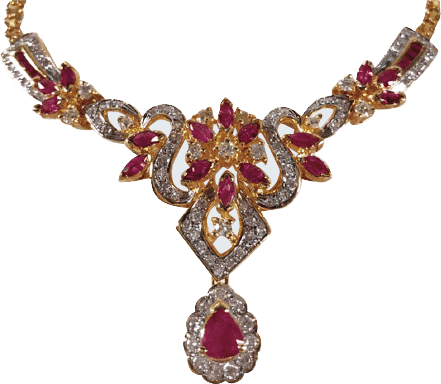
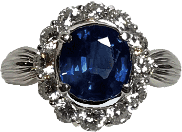

この記事が役に立つ人
- 金を1円でも高く売りたい
- ネットの情報がバラバラすぎて混乱してる
- 買い叩かれたくない
- 気軽に査定・キャンセルして、とりあえず手取りだけ知りたい
たぶん合わない人
- 金額より今日すぐ現金化が最優先（→おたからや向き）
- 家具・家電など金以外の不用品もまとめて処分したい
- ダイヤ・時計などブランド系がメイン（→その道の専門店が上）
金を高く売れるのは？主要9社ガチ比較
ネットの口コミも公式情報も片っぱしから当たって、気になる店には実際に査定にも出して確かめた結果です。金を“手取り”で高く売れる順に並べました（2026年7月時点）。
| 店名 | 金適性 | 主な向き先 | キャンペーン・特典 | 手数料・費用 | 買取方法 | 状態不良品 | 強い品目 | 注意点 |
|---|---|---|---|---|---|---|---|---|
| 1位まねきや | ◎ | 金ネックレスを手取り重視で売りたい人 | 7月限定、電話査定予約で買取金額最大30%UP＋金買取手数料10%無料 | 査定料・出張料・キャンセル料0円 | 店頭・出張・宅配 | ◎ 切れた金・刻印不明・金歯・古い金も相談候補 | 金・貴金属・宝石・時計・ブランド・古銭 | キャンペーンは金ネックレス向け。金貨・インゴット・地金・プラチナは対象外 |
| 2位おたからや | ◎ | 大手店舗網で直接相談したい人 | 現金10万円プレゼント（抽選10名様・5,000円以上ご成約） | 査定料・出張料・手数料0円 | 店頭・出張 | ◎ 他社で難しい品も相談候補 | 金・貴金属・宝石・ブランド・切手・古銭・骨董 | FC/直営混在で店舗差に注意。宅配は主軸にしない |
| 3位ブラリバ | ○ | 金に宝石やブランド価値が付く品を売りたい人 | 初回限定 査定金額20%UP系 | 査定無料。詳細条件は公式確認 | 店頭・宅配・出張・LINE/WEB | ○ 個別判断 | ブランド・時計・バッグ・宝石・金・ジュエリー | 純粋な地金より宝石・ブランド込みの品に強い |
| 4位なんぼや | ○ | ブランドジュエリー・時計も一緒に売りたい人 | 新規限定5,000円上乗せ。月次キャンペーン実績 | 宅配送料・返送料・査定料・キャンセル料0円 | 店頭・宅配・出張・オンライン | ○ | ブランド・時計・バッグ・金・宝石・ジュエリー | 金ネックレス単体よりブランド/石付き/時計とのまとめ売りで強い |
| 5位大黒屋 | ○ | 時計・ブランド・酒・金券もまとめたい人 | ブランドジュエリー10%UP など | 宅配送料・返送料・振込手数料0円 | 店頭・宅配・出張・LINE | ○ | 時計・ブランド・金・宝石・酒・金券・スマホ | 金専門というより総合買取・質・金券の利便性が強み |
| 6位コメ兵 | ○ | 信頼性重視でブランド品を売りたい人 | 買取金額 MAX10%UP | 宅配送料・返送料・キャンセル料0円 | 店頭・宅配・出張・LINE | ○ | ブランド・時計・ジュエリー・バッグ・衣料・カメラ | ノーブランド地金だけなら上位専門店と相見積もり推奨 |
| 7位ゴールドプラザ | ○ | 喜平・金貨・パール・ジュエリーを売りたい人 | 喜平/24金投資系金貨 相場100%、ジュエリー20%UP など | 査定料無料。宅配返送は条件確認 | 店頭・宅配・出張・LINE | △ | 金・プラチナ・喜平・金貨・ダイヤ・ブランドジュエリー | 関東・関西中心。対象条件が細かい |
| 8位バイセル | △ | 家にある品を出張でまとめて見てほしい人 | 抽選で買取金額5倍 | 査定料等0円。宅配キャンセル返送料は利用者負担 | 出張・店頭・宅配 | ○ | 着物・切手・古銭・骨董・毛皮・金・宝石 | 金ネックレス単体より遺品整理・着物・切手など大量整理向き |
| 9位ジュエルカフェ | △〜○ | モール内で気軽に査定したい人 | 買取金額20%UP系・店舗限定 | 査定料・出張料・宅配送料無料系。返送料要確認 | 店頭・宅配・出張 | ○ | 金・ブランド・時計・金券・切手・酒・化粧品 | 店舗限定条件が多い。高額品は専門店と相見積もり |
売りたい物・状況で選ぶ
「金ならここ、ダイヤならここ、時計ならここ」——売りたい物ごとに、いちばんの候補とあわせて比べたい店を分けました。
| 売りたい物・状況 | おすすめの店 | 理由 |
|---|---|---|
| 金・インゴット・喜平・切れた金・刻印なし・金歯・金貨 | まねきやあわせて比較：おたからや / ゴールドプラザ | 金手数料無料。X線で刻印なし・状態不良の金も数値で査定してくれる（金貨・インゴットも相談可） |
| ダイヤ・宝石付きネックレス | ブラリバあわせて比較：なんぼや / コメ兵 / まねきや | 地金＋石・ブランド価値も見てほしい場合に向く |
| ブランドジュエリー | ブラリバあわせて比較：なんぼや / コメ兵 / 大黒屋 | ブランド価値の評価が重要 |
| ロレックス・高級時計も一緒に売る | なんぼやあわせて比較：コメ兵 / 大黒屋 / ブラリバ | 時計・ブランドの販路と査定実績が重要 |
| ブランドバッグも一緒に売る | コメ兵あわせて比較：なんぼや / 大黒屋 / ブラリバ | バッグ・時計・ジュエリーのまとめ売りに強い |
| 着物・切手・古銭も家にある | バイセルあわせて比較：おたからや / ジュエルカフェ | 出張で大量整理しやすい |
| 金券・お酒も売りたい | 大黒屋あわせて比較：ジュエルカフェ / おたからや | 金券・酒・総合換金品に強い |
| 近所のモールで気軽に査定 | ジュエルカフェあわせて比較：おたからや / 大黒屋 | 店舗に入りやすく、少量査定と相性が良い |
| 宅配で比較したい | なんぼやあわせて比較：大黒屋 / コメ兵 | 返送料まで無料の条件が強い |
| 出張でまとめて売りたい | バイセルあわせて比較：おたからや / まねきや | 家の整理・大量品の導線に向く |
まずは「今いくら？」だけ、タダで確かめる。
電話予約で最大30%UP 電話で査定を予約する 受付 9:00〜21:00／通話無料 WEBで査定を予約する（1分） 査定だけ・相談だけでもOK。断っても費用は一切かかりません。この2社なら、大きく外すことはありません。まずは、金を売るときに多くの人が迷う点を整理してから、「なぜ、数ある店の中でこの2社なのか」を説明します。
実際どうなの？まねきやの口コミ
「高く売れました」の一言だけじゃ、正直信じにくいですよね。なので、良いのも悪いのも拾ってみました。
前回の買取店よりも随分高く買い取ってもらいました。刻印の無い金やプラチナでも、X線の機械で細かく含有量を測定して、正確な金額を提示してくれました。
出典：出張買取専門メディア調査
金の買取、ノーブランドでしたが、他よりも高額な買取金額に大変満足しております。
出典：出張買取専門メディア調査
優しいスタッフさんが多く、気軽に査定に行けます。無理な要望にも嫌な顔ひとつせず、上の方と交渉しながら頑張ってくださいました。
出典：出張買取専門メディア調査
※ 一方で「LINE査定の概算と、実物の査定額に差が出た」という声もあります。写真だけの概算なので、最終額は必ず現物確認で。悪い口コミも、この記事の後半できちんと紹介します。
まずはじめに｜金を売るなら、こんな悩みありませんか？
「売るなら今かもしれない。
でも、どこへ持ち込めばいいの？」
大手チェーン、街の質屋、リサイクルショップ、ネットの宅配専門店……。「金を売ろう」と検索すると、山ほど出てきます。どこも判で押したように「業界最高値」「高価買取」を掲げていて、正直、違いが分かりません。
広告費をかけている店ほど上位に表示されるため、「上に表示されている＝高く売れる店」ではありません。むしろ広告費や店舗コストは、めぐりめぐって買取価格に影響する可能性もあります。
さらに迷うのが、比較サイトです。
「おすすめ金買取店ランキング」を見ても、サイトごとに1位の店舗がバラバラ。あるサイトではまねきやが1位、別のサイトではおたからや、さらに別のサイトではなんぼや……というように、順位がまったく違います。
どのサイトも「おすすめNo.1」「高価買取」と書いてあるため、結局どれを信じればいいのか分からないという人も多いでしょう。
そこで本記事では、ランキングではなく、「実際に金を高く売れる可能性が高いか」という視点だけで比較しました。
今、金を売るべきか？

金の店頭価格は、長期で見れば歴史的な高値圏で推移しています。だからこそ「今、売るべきか」と迷う方も多いはずです。
ただし、金価格は世界情勢・為替・金利などの影響を受けて日々変動します。これからさらに上がることも、現在の水準から下がることもあり得るため、将来の価格を断言することはできません。
売却を急ぐ必要はありません。一方で、店頭・出張・宅配のいずれでも査定から売却まで進められる状態です。売らないと決めていても、相場が高水準のうちに一度だけ査定を受け、手取りの目安を確認しておく価値はあります。
金額を見てから売るか決めればよく、査定が売却の約束になるわけではありません。
では本題です｜なぜ、この2社なのか
理由は、ランキング順位ではありません。金の「最終手取り」がどう作られるかまで、公式情報で確認できたからです。
金の査定額は、1g単価だけでは決まりません
当日の買取単価 × 品位 × 正味重量石・デザイン・ブランドの評価手数料
同じK18の指輪でも、石の重さをどう扱うか、刻印がない品をどう測るか、地金以外の価値を乗せるかで、手取りは変わります。見るべきなのは「高価買取」の広告ではなく、この計算の根拠を説明できる査定かです。
その視点で調べると、まねきやとおたからやには、単なる買取チェーン以上の役割の違いがありました。まねきやは金額を伸ばすための本命査定、おたからやは近くで同日比較できる対抗査定として機能します。
-
まねきやは「業者間取引の単価」を公表している価格の出発点
まねきやは公式ページで、一般向けではなく「業者用取引価格」での取引を案内し、買取前にその価格を伝えると明記しています。これは最終額の保証ではありませんが、値段の根拠を聞かずに売るのではなく、業者間の単価を起点に交渉・比較できるという大きな差です。
-
地金だけで終わらせない査定を公表している
まねきやは、本来は重さから引かれやすい宝石やデザイン価値も査定に含めると案内しています。地金相場だけでなく、石付きリング・ジュエリー・ブランド品を「金の重さだけ」で終わらせないことが、総額を左右します。特に石付き・刻印なし・海外製の品ほど、ここを確認する意味があります。
-
刻印のない品も、機器で品位を測る
まねきやは各店舗にX線分析機器をそろえる方針を公表し、金の含有量を測って査定する例を公開しています。おたからやも蛍光X線分析機で、刻印がない・消えた品の純度を科学的に測定すると案内しています。見た目や刻印だけで低く見積もられないための、査定の土台です。
-
おたからやは、今日の比較額を取りやすい
おたからやは品位別の参考買取相場を毎日公開し、その算出根拠を国内外の公表相場・市場流通価格・自社取引実績と説明しています。実額の保証ではありませんが、近くの店舗で査定を受ければ、まねきやの見積もりと同じ日にもう一つの数字を取りにいけます。
-
「本命」と「対抗」を、現実的にそろえられる
まねきやは店頭・出張・宅配から選べ、電話申込なら買取額 最大30%UPの案内があります。一方のおたからやは、2026年7月時点で世界1,910店舗以上を公表。まねきやが遠い地域でも、近所で同日査定を取りやすいのが強みです。先にまねきや、次におたからや。2社の明細を並べ、内訳まで説明できた方を選べば大きく外しにくくなります。
公式素材で見る、査定の中身
金の重さだけで、終わらせない。
まねきや PR
鑑定スペシャリストが、宝石を正しくスピーディーに査定
公式では、素材を正しく判定し、重さから差し引かれがちな宝石やデザイン価値も含めて査定すると案内しています。
だから石付きジュエリーは、「K18だから何gでいくら」だけの見積もりで即決しないこと。地金・石・デザインの内訳まで確認する価値があります。
- 石付きリング・ネックレス
- 色石・ダイヤ付きジュエリー
- 小さい金・純度が低い金





石付きの品も、まとめて査定地金＋宝石＋デザインの価値を確認
画像・査定方針：まねきや公式「金・貴金属買取」（2026年7月確認）。個別の査定額は品物の状態・相場により変わります。
査定で、必ず確認する4項目
- 今日の1g単価と、どの品位で計算したか
- 重量と、石の重さを差し引いたか
- 石・デザイン・ブランドに、いくら価値を付けたか
- 手数料・キャンペーンを反映した最終手取りはいくらか
「業者用取引価格」や参考相場は、最終買取額を保証するものではありません。必ずこの4項目の明細を確認し、納得できなければ売らずに持ち帰りましょう。
根拠：まねきや公式（業者用取引価格・石／デザイン評価）／まねきや公式（X線分析機器）／おたからや公式（金相場の算出根拠）／おたからや公式FAQ（蛍光X線分析）（2026年7月確認）
 今月末まで
今月末まで
※ 地金・金貨・インゴット・金券は対象外です。上乗せ率の上限・適用条件があります。
では、あなたはどちらを選ぶべきか
答えはシンプルです。まねきやの対応エリア内なら、まねきや。近くに店舗がないなら、おたからやを選びます。
結論｜選ぶ店は、住んでいる地域で決まります
まねきやの対応エリア内なら、まずまねきやで査定額を確認してください。対応エリア外なら、おたからやで近所の査定額を確認する。この順番なら、迷う必要はありません。
まねきやの対応エリア

- 東京
- 神奈川
- 埼玉
- 茨城
- 栃木
- 愛知
- 静岡
- 京都
- 大阪
- 兵庫
- 香川
- 福岡
- 熊本
※ 出張買取は店舗から半径20〜30km圏内が目安（遠方は要相談）。宅配買取は全国対応・送料無料です。
 銀座本店東京
銀座本店東京 上野御徒町店東京
上野御徒町店東京 横浜本店神奈川
横浜本店神奈川 キャスティ川口店埼玉
キャスティ川口店埼玉 つくば研究学園駅前店茨城
つくば研究学園駅前店茨城 フレスポうつのみや市場店栃木
フレスポうつのみや市場店栃木 名古屋栄本店愛知
名古屋栄本店愛知 静岡本店静岡
静岡本店静岡 京都四条本店京都
京都四条本店京都 心斎橋本店大阪
心斎橋本店大阪 姫路本店兵庫
姫路本店兵庫 高松兵庫町店香川
高松兵庫町店香川 天神西通り本店福岡
天神西通り本店福岡 熊本本店熊本
熊本本店熊本
上記は全25店舗の一部です。
まず、2社がどういう会社なのか
比較サイトの多くは「店舗数」と「口コミ」しか載せていません。ここでは会社の規模・体制まで並べます。
| 項目 | まねきや | おたからや |
|---|---|---|
| 運営会社 | 株式会社水野 | 株式会社いーふらん |
| 設立 | 2009年7月 （創業2008年9月） | 2000年3月 |
| 資本金 | 1億975万円 | 4億8,000万円 |
| 従業員数 | 160名 | 1,863名 |
| 売上高 | 50億700万円 （2025年6月期） | 989億円 （26期） |
| 本社 | 東京・大阪 | 横浜みなとみらい |
| 店舗数 | 25店舗 | 1,910店舗以上 |
| 海外展開 | 独自の海外販売ルート | 海外子会社7か国 |
※ 各社公式の公表値（2026年7月時点）。まねきやの従業員数は2026年3月時点、おたからやは2026年4月1日時点。
数字だけ見れば、おたからやの圧勝です
売上は約20倍、従業員は約12倍、店舗は約76倍。企業規模はまったく比較になりません。
ただし——会社の大きさと、あなたの買取額は別の話です。ここから先が本題になります。
なぜ、店によって金額が変わるのか

金の国際相場は、どの店でも同じです。今日の金1グラムの価値は、東京でも大阪でも、大手でも個人店でも変わりません。
では何が違うのか。店がそこから引く「取り分」だけです。
相場 −（店の利益＋運営コスト）
＝ あなたの手取り
店には家賃も人件費も広告費もあります。取り分があること自体は当然です。問題はその大きさが店によってまったく違うこと。そして——ここがいちばん大事なんですが、その"取り分"は、たいてい見えないように隠されています。
「手数料無料」の、ほんとの話
金の買取店の多くは「手数料無料！」と大きく出しますよね。でも調べていくと、業界の実態はこうでした。
相場より1〜2割ほど低い価格で買い取って、その差額をこっそり"取り分"にする——つまり「手数料0円」と言いながら、値段そのものに手数料が埋め込まれているケースが多いんです（相場の10〜30％、実際は2割前後が引かれるとも言われます）。
やっかいなのは、売る側からは"いくら抜かれたか"が見えないこと。表示は「無料」なので、比べようがないんですね。
| よくある店 | まねきや | |
|---|---|---|
| 手数料の表示 | 「無料」 | 「無料」（金は手数料0円） |
| 買取価格の基準 | 非公開。相場より内々に低め | 本日の相場を公開＋業者価格ベース |
| 抜かれてないか | 確認できない | 自分で検算できる |
まねきやは本日の貴金属相場を公式サイトで公開していて、しかも一般向けではなく「業者間取引価格」を起点に案内すると明記しています。自社で業者向けのオークション市場（マネオク）や海外の販路も持っているので、中間マージンを削れる＝"抜き"を小さくできる余地があるわけです。
だから何より——提示額が妥当か、あなた自身で確かめられる。「高く買います」の一言より、これがいちばん効きます。
おたからやの実力
強み①｜1,910店舗という、絶対に真似できない規模
これは本物の強みです。思い立った日に、近所で現金化できる。年中無休で、査定は最短5分。「今日中にお金が必要」という状況なら、おたからや以上の選択肢はほぼありません。
強み②｜手数料は完全に無料。キャンペーンも頻繁
査定料・出張費・宅配の送料・キャンセル料、すべて無料です。店頭・出張・宅配の3方式すべてに対応しています。この点で不利はありません。
おたからやは週替わりで買取アップや現金プレゼントのキャンペーンを打っています。内容が頻繁に変わるので、利用前に公式サイトでその週の条件を確認するのがおすすめです。テレビCMも全国放送しており、知名度は抜群です。
強み③｜ブランド品・時計に詳しい担当者がいる
ルイヴィトンのバッグを持ち込みました。担当スタッフがルイヴィトンに詳しく、型番・製造年・状態を丁寧に確認してくれて適正な価格をつけてもらえました。
出典：買取知恵袋（おたからやの口コミ調査）
ロレックスのデイトジャストを売りました。スタッフが時計に詳しく、シリアルナンバーから製造年を確認してくれました。
出典：買取知恵袋（おたからやの口コミ調査）
「金のネックレスとリングをまとめて売った。貴金属については安心して利用できる」という声もあります。良い店舗に当たれば、満足度は非常に高いということです。
弱み｜その「当たり外れ」が大きい
約1,910店舗のうちおよそ1,220店舗が加盟店。オーナーが独立して経営しているため、差が出ます。
グッチのバッグをおたからやで査定してもらったら15,000円でした。その後コメ兵に持って行ったら42,000円でした。
出典：買取知恵袋（おたからやの口コミ調査）
査定額を断ったら、スタッフが急に価格を2倍以上に上げてきました。最初からその価格を出せないのはなぜなのか疑問でした。
出典：買取知恵袋（おたからやの口コミ調査）
出張買取を依頼しました。全体的に低い査定でした。断ると何度も電話がかかってきて、しつこい対応に困りました。
出典：買取知恵袋（おたからやの口コミ調査）
同じブランド内でも店舗間で査定額が2〜3倍違ったケースが報告されています。専門メディアも、デメリットとして「FC運営による査定のばらつき」「公開相場との非透明性」を挙げています。
これは悪質さの話ではありません
1,220人の別々の経営者が、それぞれの判断で値段をつけている。ばらつくのは構造上あたりまえです。
問題は——はじめて売る人に、当たりかハズレかを見分ける方法がないことです。
まねきやの実力

店頭には10年以上のキャリアを持つ査定士が在籍し、骨董や古銭など難しい品も1点ずつ丁寧に見ます。査定はお客様の目の前で行い、金額の根拠も詳しく説明する——これが基本方針です。予約は不要、その場で現金払いに対応しています。
強み①｜"担当者ガチャ"が起きにくい
誰が査定しても、金の価値は重さ × 純度 × その日の相場で決まります。まねきやは相場を公開し、純度もX線で数値化するので、"人によって言い値が変わる"部分が小さい。担当や店舗で金額がブレる不安が起きにくいんです。はじめて売る人ほど、この安心感は効きます。
強み②｜本日の相場を公開している
ここが見落とされがちですが、極めて重要です。
まねきやの公式サイトには本日の貴金属相場がリアルタイムで表示され、買取価格シミュレーターも用意されています。
つまり——査定に出す前に、自分でおおよその金額を計算できます。
相場を知っていれば、
買い叩かれようがない。
提示された金額が妥当かどうかを自分で検算できる。これがもっとも実効性のある自衛策です。一方おたからやは相場を公開しておらず、専門メディアからも透明性の点で指摘を受けています。
強み③｜X線分析機で純度を数値化

目視ではなく、機械で測る
目視や試薬による簡易判定ではなく、X線分析機で含有量を測定します。刻印が消えている物、そもそも刻印がない物でも、純度を数字で確認できます。
数値が出る＝根拠が示せるということ。「だいたいこれくらい」ではなく「純度は何%です」と提示されます。
前回の買取店よりも随分高く買い取ってもらいました。刻印の無い金やプラチナでもX線の機械で細かく含有量を測定し、正確な金額を提示することができるとのことでした。
出典：出張買取専門メディア調査
純度別の買取価格（1グラムあたり）
| 純度（刻印） | 買取価格 |
|---|---|
| K24（純金） | 23,689円/g |
| K22 | 21,700円/g |
| K18 | 17,743円/g |
| K14 | 13,800円/g |
| K10 | 9,850円/g |
| プラチナ Pt1000 | 9,266円/g |
| 銀 Silver1000 | 338円/g |
※ まねきや公式サイト掲載の相場をもとにした参考値です。相場は日々変動します。最新価格は公式サイト・店頭でご確認ください。金メガネ・金歯・金の破片・インゴットなども買取対象です。
強み④｜買取実績が相場を上回っている
専門メディアが、まねきやの買取実績を一般相場と並べて検証しています。
| 品目 | まねきや | 一般相場 |
|---|---|---|
| カルティエ タンク リング | 12万円 | 6〜10万円 |
| シャネル マトラッセ | 57万200円 | 35〜55万円 |
| ロレックス デイトジャスト | 88万8,000円 | 75〜90万円 |
| K18ダイヤブレス D4.56 | 39万6,055円 | 35〜40万円 |
| ルイヴィトン ブロワ | 5万5,000円 | 2万9千〜5万5千円 |
5例中2例が相場の上限を超え、残る3例も上限付近で買い取られています。海外にも独自の販売ルートを持っているため、高値を出せる余地があると説明されています。
金・貴金属そのものの買取実績も、公式サイトで公開されています。
| 品目 | 買取金額 |
|---|---|
| インゴット 1kg | 2,768万2,000円 |
| ジュエリー各種（まとめ） | 3,675万円 |
| 喜平ネックレストップ | 793万円 |
| 金歯 | 96万円 |
| 金板の破片 | 75万円 |
※ まねきや公式サイト掲載の買取実績より。特定の取引例であり、同等の金額を保証するものではありません。1,000万円を超える高額買取でも現金での支払いに対応（本人確認書類のほか、200万円超は公共料金領収書または住民票が別途必要です）。
主な買取対象
 金・貴金属
金・貴金属 ダイヤモンド
ダイヤモンド 色石・宝石
色石・宝石 ブランド品
ブランド品
このほか、時計・着物・骨董品・絵画・古銭・切手・万年筆・カメラ・洋酒・金券・鉄道模型まで対応しています。遺品整理では金だけが出てくることはまずないので、一度の訪問でまとめて見てもらえるかどうかで手間が変わります。
強み⑤｜21時まで受付／ロゴなし車両
受付は9:00〜21:00。おたからやの19時に対して2時間長い。日中は仕事や介護で動けず、夜にようやく落ち着く方には決定的です。
出張買取では社名ロゴの入っていない車両で訪問します。「買取店の車が家の前に停まっているのを近所に見られたくない」——長くその土地に住んでいる方ほど、この配慮は効きます。
強み⑥｜第三者認証を取得している
- プライバシーマーク（認定番号 17003773）— 個人情報の管理体制が第三者機関の基準を満たしていることの証明
- AACD加盟（会員番号 R-0100）— 不正品の排除に取り組む業界団体
- 古物市場主許可— 業者間のオークション市場を運営できる資格。相場を作る側にいるということです
買取では住所・氏名・身分証という重い個人情報を渡します。その管理体制が外部基準で確認されているかどうかは、本来もっと重視されるべき点です。
強み⑦｜成長率が高い
売上高は2022年の22億8,000万円から、2025年6月期に50億700万円へ。3年で約2.2倍です。規模ではおたからやに遠く及びませんが、伸びている会社ではあります。
弱み｜正直に3つ書きます
- 25店舗しかない。対応エリア外なら、素直におたからやを選んだほうが早いです
- 宅配買取で返却になった場合、査定額1万円以下だと返送料が自己負担になる可能性があります
- 家具・家電は買い取れません。家中の不用品をまとめて処分したい方には向きません
また、まねきやにも低評価の口コミは存在します。
査定額が非常に低い。この店で買取不可になったものが、他店に行けば値段が付きます。他店では、この店が出した金額の3倍は付きました。
出典：出張買取専門メディア調査
これが現実です。どんな店でも、すべての品物が高く売れるわけではありません。特に専門性の高い分野では、その分野の専門店が上回ることは十分にあり得ます。
まねきやの評価スコア
特徴的なのは、「接客品質」と「説明のわかりやすさ」が最高値である点です。金額そのものより、説明の丁寧さが評価されている。はじめて売る方にとっては、ここが安心材料になります。
優しいスタッフさんが多く、気軽に買取査定をしに行くことができます。無理な要望にも嫌な顔一つせず、上の方と交渉をしながら、頑張って下さりました。
出典：出張買取専門メディア調査
金の買取、ノーブランドでしたが、他よりも高額な買取金額に大変満足しております。
出典：出張買取専門メディア調査
祖母の形見のダイヤの指輪を、気持ちよく買い取っていただけました。
出典：まねきや公式サイト 利用者の声
最大30%UPは、電話申込限定です
ここだけは間違えないでください
現在実施中の買取金額 最大30%UPは、お電話での申込が対象です。
WEB予約でも査定は無料で受けられますが、上乗せを受けたい場合は電話から申し込んでください。同じ品物でも、申込方法だけで結果が変わります。
※ 上限額・適用条件があります。詳しくは申込時にご確認ください。
どの店を選んでも、損をしない5つのコツ

コツ1｜その場で即決しない
「今日決めてくれるなら、もう少し上げます」——これは判断を急がせる常套句であることがあります。金は逃げません。迷ったら「一度持ち帰って考えます」で構いません。それで態度が変わる店なら、そもそも売るべきではないという判断材料になります。
コツ2｜「重さ」と「純度」を必ず確認する
金の買取額は、突き詰めれば 重さ（g）× 純度 × その日の相場 で決まります。査定時は目の前で量ってもらい、グラム数と純度（K18・K24など）を確認してください。この2つと当日の相場が分かれば、提示額が妥当か自分で概算できます。
明細を出さない、量る場面を見せない店には注意が必要です。
コツ3｜可能なら2社に出す
もっとも確実なのは複数社に査定してもらうことです。査定もキャンセルも無料である以上、費用はゼロ。手間はかかりますが、数万円の差を防げます。相見積もりはおたからや→まねきやの順で回り、高いほうに決めるのが定石です。
コツ4｜付属品は、すべて揃えてから出す
鑑定書、購入時の箱、保証書、替えのコマ——こうした付属品が揃っているだけで査定額が上がります。特にブランド品・時計は顕著です。「捨てずに取っておいた箱」が、数千円〜数万円の差になることがあります。
コツ5｜金とブランド品は、まとめて出す
金の指輪だけでなく、使わないブランドバッグや時計も一緒に出すと、まとめ売りのボーナス評価がつくことがあります。1点ずつ別の店に持ち込むより、一度にまとめたほうが有利になりやすい。遺品整理ならなおさらです。
こんな業者は、その場で帰ってOKです

大半の買取店はまっとうですが、ごく一部に悪質な業者もいます。次のいずれかに当てはまったら、契約せず帰って構いません。
危険信号のチェックリスト
- 「今日決めてくれたら」と即決を迫る。急がせるのは、相場を調べさせない狙いのことがあります
- 不安や同情に訴えてくる。「これは価値がない」「処分に困るでしょう」で安く買い叩く手口
- 古い口コミしかなく、悪評に無反応。直近3か月の口コミがない、悪い評価を放置している
- 金額の根拠を出さない。重さ・純度・相場の内訳を見せず「まとめて◯円」とだけ言う
- その場で品物を持って行こうとする。契約前に品物を預ける必要はありません
逆に、「今は相場が下がっているので、まだ売らないほうがいい」と客側に立ったアドバイスができる査定士は信頼できます。目の前で量り、計算式を示し、こちらの質問に淀みなく答える。これが良い店の条件です。
税金は、ほとんどの人にかかりません
金を売って利益が出た場合、税金がかかることがあります。他の比較サイトがあまり触れない部分なので説明します。
国税庁によれば、金地金の売却益は原則として譲渡所得として、給与所得などと合わせた総合課税の対象になります。
ただし——年間50万円の特別控除があります。売却益が年間50万円以下なら課税されません。一般家庭がアクセサリーを数点売る程度なら、まずこの範囲に収まります。
5年を超えて持っていた物は、さらに有利
| 保有期間 | 課税対象になる金額 |
|---|---|
| 5年以内（短期） | 売却益 − 50万円 |
| 5年超（長期） | （売却益 − 50万円）× 1/2 |
たとえば売却益が200万円だった場合。
| 5年以内なら | 150万円が課税対象 |
|---|---|
| 5年超なら | 75万円が課税対象 |
課税対象が半分になります。親から受け継いだ物や、何十年も前に買った物は当然「5年超」です。長く持っていた方ほど有利ということです。
※ 一般的な説明です。個別の判断は税務署または税理士にご確認ください。1回の取引金額が大きい場合、業者から税務署へ支払調書が提出されることがあります。
申込から現金化までの流れ

-
電話またはWEBで予約
WEBは1分ほど。30%UPを受けるなら電話から。店頭買取は予約不要です（大口の場合は事前連絡が推奨されています）。
-
査定方法を選ぶ
店頭＝その場で現金化したい方。出張＝品数が多い・重くて運べない方。宅配＝人に会わずに済ませたい方。
-
査定を受ける
出張はロゴなしの車で訪問。宅配はGPS付きのジュラルミンケースが届き、送料・宅配キットとも無料です。金の相場は発送日の相場で計算されます。
-
金額を見てから決める
納得したらその場で現金。断っても費用はかかりません。

よくある質問
査定を頼んだら、売らないといけませんか。
いいえ。断れます。まねきや・おたからやとも、キャンセル料は無料です。査定は売却の約束ではありません。
壊れたネックレスや、片方だけのピアスでも売れますか。
はい。金は素材そのものに価値があるため、壊れていても重さと純度で評価されます。デザインが古くても、留め具が壊れていても問題ありません。「もう使えないから」という理由で売られる方が大半です。
「K18」とは何ですか。
金の純度を表す記号です。K24が純金（99.99%）で、K18はそのうち18/24＝75%が金という意味。残り25%は強度を出すための銀や銅です。数字が大きいほど金の割合が高く、1グラムあたりの価格も高くなります。
刻印が見当たりませんが、大丈夫ですか。
はい。まねきやはX線分析機で純度を測定できます。刻印が消えている、そもそも無い場合でも査定は可能です。
金メッキでも売れますか。
メッキは表面に薄く金を塗ったもので、地金としての価値はほとんどありません。ただし、メッキだと思っていた物が本物だったというケースもあります。判断がつかない場合は一緒に見てもらうのが確実です。
買い取ってもらえない物はありますか。
有価証券、医薬品、PSEマークのない古い家電、ワシントン条約に該当する剥製などは買取できません。家具・家電も対象外です。
家族や近所に知られたくないのですが。
出張買取は社名ロゴの入っていない車で訪問します。宅配買取なら人に会わずに完結します。
手数料はかかりますか。
まねきや・おたからやとも、査定料・出張費・宅配送料・キャンセル料はすべて無料です。まねきやは金製品の買取で、「ネットで見た」と伝えると通常10%の手数料が無料になります（分析料のみかかる場合があります）。「表面の単価は高いのに、あとから手数料10〜20%を引かれた」というのが業界で最も多いトラブルなので、必ず手数料込みの手取り額で比べてください。
身分証は必要ですか。高額でも現金でもらえますか。
必要です。古物営業法により本人確認が義務づけられています。現住所が記載された公的な身分証（運転免許証・マイナンバーカード・パスポートなど）をご用意ください。1回の取引が200万円を超える場合は、マイナンバーの提出が法律で義務づけられており、公共料金の領収書や住民票が追加で必要になります。まねきやは1,000万円を超える高額買取でも、その場で現金払いに対応しています。
遺品でも売れますか。名義が違いますが。
相続した品物は相続した方の所有物になりますので売却できます。本人確認書類はご自身のものをご用意ください。なおご本人以外の持ち物の売却は対応できません。
未成年でも売れますか。
18歳未満の方は、保護者の同伴または同意書が必須です。
出張買取はどこまで来てくれますか。
店舗から半径20〜30km圏内が目安です。遠方の場合はスケジュール相談のうえ全国対応しています。
まとめ｜結局どっちを選ぶ？
| 状況 | おすすめ | 理由 |
|---|---|---|
| 対応エリア内に住んでいる | まねきや | 相場を公開＝手取りを自分で検算できる。手数料も無料 |
| エリア外に住んでいる | おたからや | 1,910店舗。近所にある可能性が高い |
| 今日中に現金化したい | おたからや | 年中無休・最短5分査定・店舗数が圧倒的 |
| 買い叩かれるのが不安 | まねきや | 相場公開＋X線測定で、根拠を検算できる |
| 夜しか時間が取れない | まねきや | 21時まで受付（おたからやは19時） |
| 家具・家電も処分したい | 他社 | 両社とも家具・家電は対象外 |
金の相場は、いま過去6年でもっとも高い水準にあります。ただ、この先どうなるかは誰にも分かりません。
いま売ると決める必要はありません。ただ「いくらになるのか」は、無料で今日わかります。引き出しの奥で何年も眠っている物の値段を、一度だけ確かめてみる。その数字を見てから決めても、遅くはないはずです。
査定料・出張費・キャンセル料
すべて無料です。
- 本ページはプロモーションを含みます
- 本ページは、公開されている情報をもとに編集部が作成した比較・紹介記事です
- 掲載の順位・◎○△などの評価は当編集部の主観的な比較であり、買取価格の優劣を保証するものではありません。「最大」「相場100%」等のキャンペーンは対象品・上限・併用等の条件があります
- 掲載内容は2026年7月23日時点の情報です。最新の条件は各社公式サイトでご確認ください
- 買取価格は、相場変動・品物の状態・純度・重量により変動します。掲載の買取実績は特定の取引例であり、同等の金額を保証するものではありません
- キャンペーンの適用条件・上限額は申込時にご確認ください
- 税制に関する記載は一般的な説明です。個別の判断は税務署または税理士にご確認ください